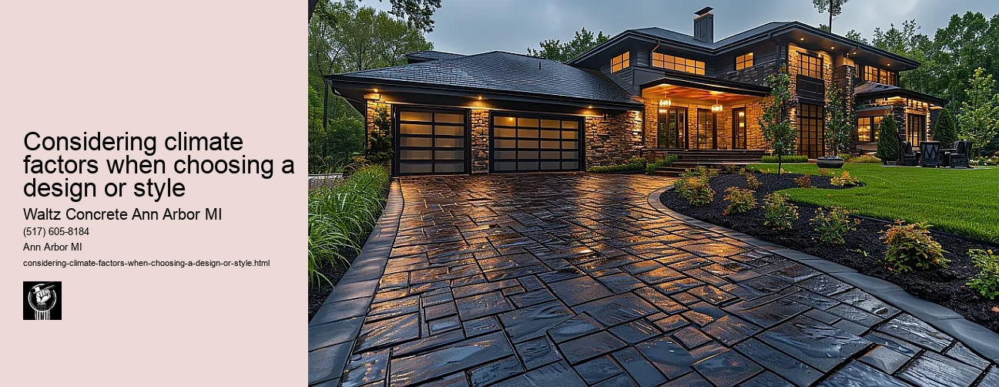

News
Concrete Driveway Installation Ann Arbor Mi
Concrete Driveway Installation Ann Arbor Mi
Choosing the right contractor for installation
Cost of concrete driveway installation in Ann Arbor
Permit requirements for driveway installation in Ann Arbor
The process and timeline of concrete driveway installation
Different types of concrete used in driveways
Maintenance and Repair of Concrete Driveways in Ann Arbor Mi
Maintenance and Repair of Concrete Driveways in Ann Arbor Mi
Preventive maintenance tips for durability
Common causes for concrete driveway damage
Professional companies offering repair services in Ann Arbor
Doityourself versus professional repairs
Costs associated with repairing a concrete driveway
Designs and Styles of Concrete Driveways in Ann Arbor Mi
Designs and Styles of Concrete Driveways in Ann Arbor Mi
Popular design trends for driveways
Considering climate factors when choosing a design or style
Unique customizations available for concrete driveways
Influence of home architecture on driveway design
Stamped stained and decorative options
Environmental Impact of Concrete Driveways in Ann Arbor Mi
Environmental Impact of Concrete Driveways in Ann Arbor Mi
Carbon footprint associated with concrete production
Use of sustainable materials in concrete driveways
Drainage considerations to reduce environmental impact
Local regulations regarding environmentally friendly driveways
Potential use of permeable or porous pavement
Alternatives to Concrete Driveways in Ann Arbor Mi
Alternatives to Concrete Driveways in Ann Arbor Mi
Asphalt driveways and their proscons
Paver stone driveways and their benefitsdrawbacks
Gravel or crushed stone as an alternative option
Comparing costs between different driveway materials
Resinbound surfaces as emerging technology
About Us
Contact Us

Considering climate factors when choosing a design or style
Considering climate factors when choosing a design or style
Title: The Role of Climate Factors in Architectural Design Choices
Climate is an integral factor that influences the design and style of structures across the world. It plays a pivotal role in determining the choice of building materials, structural design, and even architectural aesthetics. Considering climate factors when choosing a design or style enhances not only functionality but also sustainability.
The influence of climate on architecture dates back to ancient times when humans relied on natural environments for shelter. People designed their homes based on local weather conditions, using available resources to ensure comfort and safety against harsh elements. For instance, traditional Inuit igloos were structured to withstand freezing Arctic temperatures while Bedouin tents allowed air circulation for cooling in desert climates.
Today, architects incorporate several environmental aspects into their designs as they strive to achieve eco-friendly solutions. From temperature variations to precipitation levels and wind patterns, these climatic factors fundamentally shape how buildings are designed.
In warmer climates like Africa or South-east Asia, building designs often maximize cross-ventilation and shading to dissipively cool interiors without relying heavily on energy-consuming air conditioning systems. High ceilings, wide windows and verandas are common features seen in tropical architecture.
On the other hand, properties in colder climates such as Northern Europe or Canada have different challenges; retaining heat becomes a priority. Architects tend towards compact shapes with high insulation levels for walls, roofs and floors. Furthermore, south-facing windows can be utilized for passive solar heating during winter months.
Moreover, considering climate factors can also lead to locally-contextual architecture - a design approach that respects local culture and history along with its environment. Using local materials offers numerous benefits such as reduced transportation emissions associated with imported goods; increased resilience towards local weather conditions; plus fostering regional identity by preserving vernacular architectural styles.
However, taking into account these considerations does not mean compromising creativity or aesthetics in architectural design. An array of innovations has proven that functional can indeed be beautiful: green roofs providing insulation while creating urban oases; wind turbines integrated into structures, generating on-site energy; or rainwater harvesting systems turned into aesthetic water features.
In conclusion, considering climate factors is essential in designing buildings that are not only functional and comfortable to live in, but also sustainable. It encourages architects to think creatively about how they can utilize natural elements to their advantage while reducing the buildings' environmental impact. As we face the global challenge of climate change, incorporating these considerations will undoubtedly play a crucial role in shaping future architectural designs.
Popular design trends for driveways
Considering climate factors when choosing a design or style
Frequently Asked Questions
What are the key climate factors to consider when choosing a driveway design in Ann Arbor, MI?
The main climate factors to consider include heavy snowfall in winter, moderate rainfall throughout the year, and temperature fluctuations. These can affect the durability and maintenance of your driveway.
How does the local climate in Ann Arbor affect concrete as a material for driveways?
In Ann Arbors cold winters, freeze-thaw cycles can cause concrete to crack. However, with proper installation and sealing, concrete driveways can withstand these conditions effectively.
How should I design my concrete driveway considering frequent snowfall in Ann Arbor?
A heated driveway system could be an option to melt away snow. Also consider adding texture or a rough finish to your driveway which will provide traction during icy conditions.
Does rainwater drainage need special consideration while designing a driveway in Ann Arbor due to its moderate rainfall?
Yes. Proper sloping of your driveway is essential for efficient water runoff. Installing French drains or other drainage systems may also be beneficial depending on specific circumstances.
Can fluctuating temperatures harm my concrete driveway? If so, how do I prevent it?
Yes, drastic temperature changes can cause cracks due to expansion and contraction of the concrete. Using control joints at regular intervals on your driveway allows controlled cracking and prevents random surface cracking.
Considering climate factors when choosing a design or style